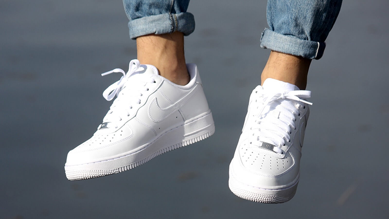
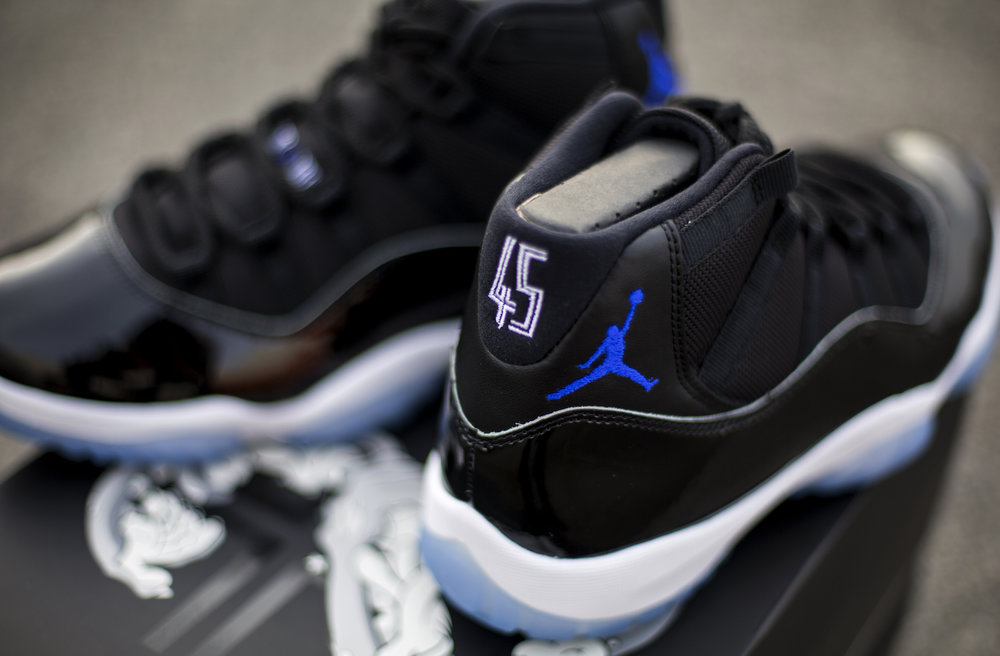
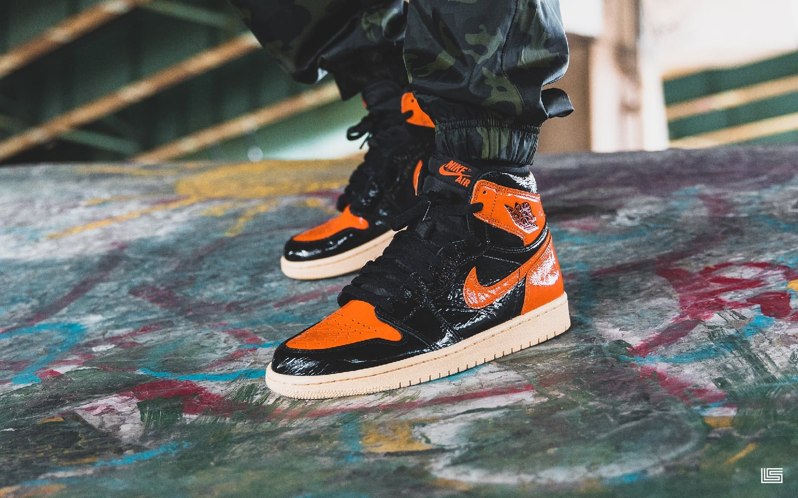

Sneaker World
Welcome to my sneaker gallery! The site where I will show you some of my top favorite sneakers.
Learn More About Kicks

This is an AIR FORCE 1. The most classic shoe for every sneaker head in the world. It is also one of Nike's highest selling sneaker year round. Originally, it was designed as the first basketball shoe to use AIR technology. Now, it is considered a lifestyle show as people wear it mainly for fashion.

The Jordan 11 SPACE JAMS are an iconic shoe. Made and worn by the basketball legend himself - Michael Jordan. This is one of the most expensive and high demand shoes out for resale. It was the shoe that was worn by Michael in the movie Space Jam.

Below we have one of my favorite sneakers in the market. Unfortunately, I do not own a pair as they resell for over $1,000. This are the Nike and Virgil Abloh collaboration for the Jordan 1. I just love the soft blue and contrast of orange and white.

My all time favorite sneaker: The Jordan 1 Royals. This is one of Michael Jordan's most classic colorways for the Jordan 1. In 1985, the Jordan 1 was the first basketball shoe that Michael Jordan relased. It is my favorite shoe in my closet to-date.

The Jordan 1 Shattered Backboard 3.0 is my most current purchase for my sneaker collection. This shoe was inspired by Halloween colors and the original Shattered Backboard. It is a shoe that stands out amongst the crowd. This gem resells for almost $300 up to $600.